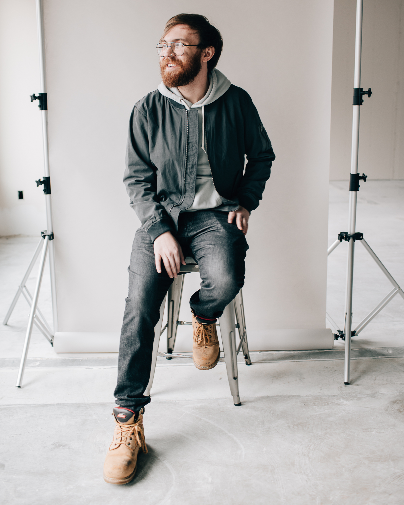

| Languages | Python, TypeScript, PowerShell, Bash, SQL |
| Machine Learning / Data Science | PyTorch, TensorFlow/Keras, scikit-learn, BERT/transformers, NLP |
| AI / LLM | RAG, prompt engineering, model evaluation, model guardrails |
| Data | Pandas, Polars, NumPy, DuckDB |
| Infra | AWS (Bedrock, SageMaker, Lambda, CloudFormation, CDK, S3, IAM), CI/CD pipelines |
| Status: | Building things |
| Here for: | Networking, Interesting problems |
| Hometown: | Iowa |
| Occupation: | Machine Learning Engineer |
| Experience: | 7+ years in ML & data science |
| Zodiac Sign: | Gradient Boost ♉ |
| University of Iowa | Iowa City, IA 2017 – 2019 Mathematics coursework, Computer Vision Lab |
| Kirkwood Community College | Cedar Rapids, IA 2014 – 2016 Associate of Science |
hey!! I'm Mitchell, a Machine Learning Engineer with 7+ years in machine learning and data science. Right now I build LLM tooling and ML platforms at Principal Financial Group: libraries on AWS Bedrock, a central LLMOps platform used by ~15 teams, and a SageMaker platform that ~50 projects have shipped through.
Before that I was a data engineer at Dwolla, and before that I trained computer vision models in the University of Iowa Computer Vision Lab. In my spare time I build ML side projects about football, YouTube, LLM internals, and my golf swing (which needs it).
Teams working on hard ML and LLM problems. Recruiters: my inbox is open. 💌
Gradient-boosted classifier with walk-forward time-series validation over 20 seasons of player data: AUC 0.878 across 3,389 out-of-sample predictions (2010–2024); High Risk tier calibrated at 87.9% actual decline vs. 11.9% for Low Risk. Feature engineering across player stats, age curves, injuries, workload-vs-peak, and team changes.
Predicted channel-relative video performance on a 1.15M-video corpus (92k/11.5k/11.5k train/val/test); fine-tuning the MiniLM title embedding model lifted test R² from 0.06 to 0.22. Benchmarked multimodal (title text + ResNet50 thumbnail features) and transcript topic-cluster variants; documented negative results.
Library for activation-steering style transfer on open-weight LLMs: style vectors extracted from contrastive pairs in the residual stream, injected at inference via forward hooks; bridge-style composition for style pairs with no parallel data. pip-installable with CLI.
Computer-vision web app reconstructing a 3D skeleton from single-camera golf-swing footage: pose estimation, key-event detection (address/top/impact), and 8 biomechanical metrics benchmarked against a reference swing, served with an interactive 3D viewer.
Mitchell has 8.32 billion friends.
no dependency conflicts. 10/10 would pip install again
(translation: ur queries r so fast it should b illegal)
Add Comment